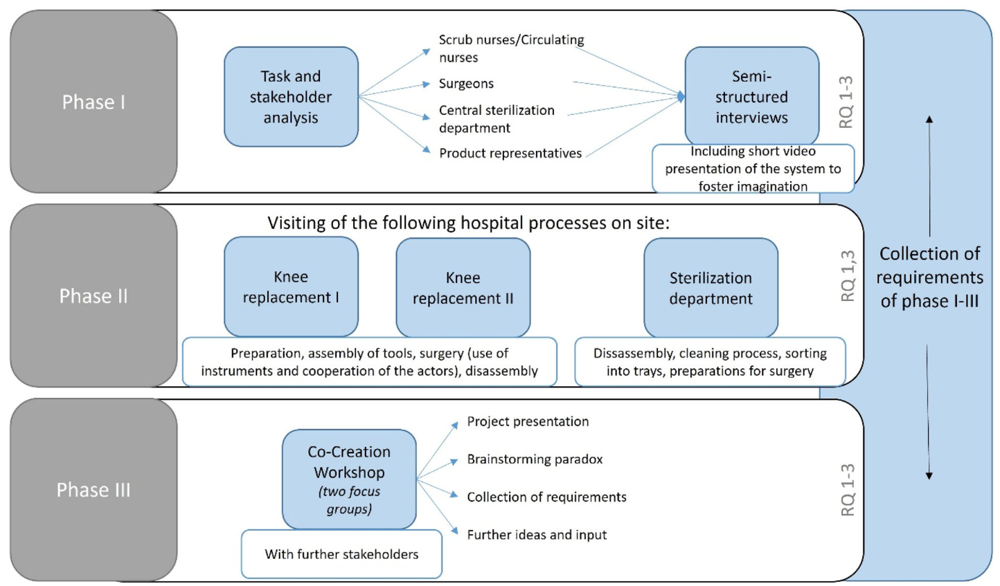
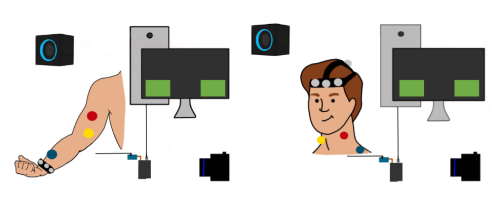
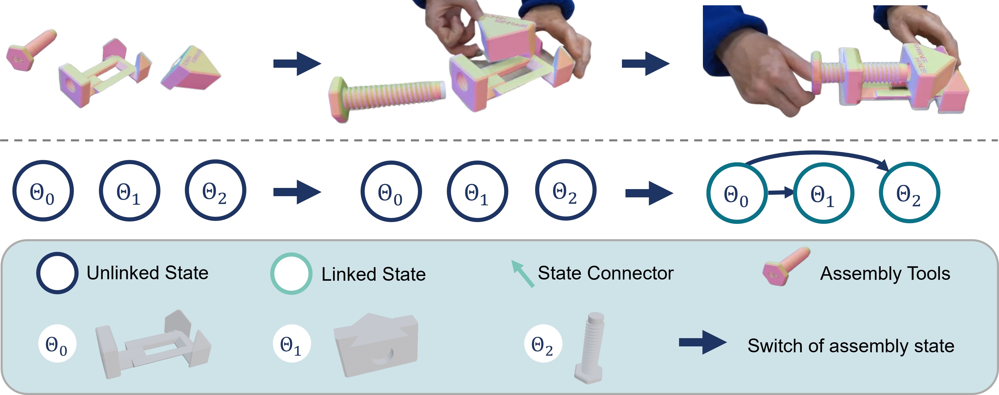
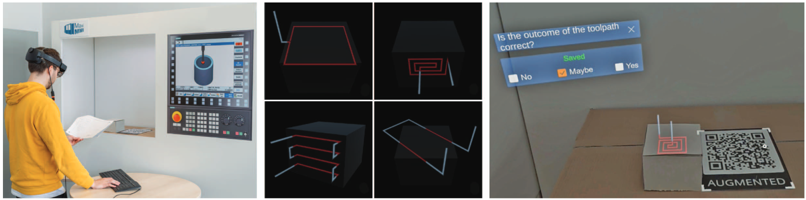

<section>
    <div class="container">

        <hr>
        <h4 id="2024">2024</h4>
        <hr>

        <div class="row">
            <div class="col-lg-4 col-md-4 col-sm-12 text-center">
                
            </div>
            <div class="col-lg-8 col-md-8 col-sm-12" style="padding:2%">
                <span class="papertitle">Requirement Analysis for an AI-Based AR Assistance System for Surgical Tools in the Operating Room: Stakeholder Requirements and Technical Perspectives</span>
                <br>
                <span style="font-weight: lighter">E. Cramer, A. Kucharski, </span>J. Kreimeier<span style="font-weight: lighter">, S. Andreß, S. Li, C. Walk, F. Merkl, J. Högl, P. Wucherer, P. Stefan, R. von Eisenhart-Rothe, P. Enste, and D. Roth</span>
                <br>
                <em>International Journal of Computer Assisted Radiology and Surgery, </em>2024
                <br>
                <p class="d-inline-flex gap-1">
                    <a class="btn btn-dark" data-bs-toggle="collapse" href="#collapseNeuralTracking" role="button"
                       aria-expanded="false" aria-controls="collapseNeuralTracking">
                        Abstract
                    </a>
                    <a class="btn btn-dark"
                       href="https://link.springer.com/article/10.1007/s11548-024-03193-0">Springer</a>
                </p>
                <div class="collapse" id="collapseNeuralTracking">
                    <div class="card card-body">
                        <p>
                            Purpose
                            We aim to investigate the integration of augmented reality (AR) within the context of increasingly complex surgical procedures and instrument handling toward the transition to smart operating rooms (OR). In contrast to cumbersome paper-based surgical instrument manuals still used in the OR, we wish to provide surgical staff with an AR head-mounted display that provides in-situ visualization and guidance throughout the assembly process of surgical instruments. Our requirement analysis supports the development and provides guidelines for its transfer into surgical practice.
                            Methods
                            A three-phase user-centered design approach was applied with online interviews, an observational study, and a workshop with two focus groups with scrub nurses, circulating nurses, surgeons, manufacturers, clinic IT staff, and members of the sterilization department. The requirement analysis was based on key criteria for usability. The data were analyzed via structured content analysis.
                            Results
                            We identified twelve main problems with the current use of paper manuals. Major issues included sterile users’ inability to directly handle non-sterile manuals, missing details, and excessive text information, potentially delaying procedure performance. Major requirements for AR-driven guidance fall into the categories of design, practicability, control, and integration into the current workflow. Additionally, further recommendations for technical development could be obtained.
                            Conclusion
                            In conclusion, our insights have outlined a comprehensive spectrum of requirements that are essential for the successful implementation of an AI- and AR-driven guidance for assembling surgical instruments. The consistently appreciative evaluation by stakeholders underscores the profound potential of AR and AI technology as valuable assistance and guidance.
                        </p>
                    </div>
                </div>
            </div>
        </div>
        <br>
        <div class="row">
            <div class="col-lg-4 col-md-4 col-sm-12 text-center">
                
            </div>
            <div class="col-lg-8 col-md-8 col-sm-12" style="padding:2%">
                <span class="papertitle">Neural Motion Tracking: Formative Evaluation of Zero Latency Rendering</span>
                <br>
                <span style="font-weight: lighter">D. Roth, V. Bräutigam, N. Joshi, C. Kleinbeck, H. Schieber and</span>
                <span>,  J. Kreimeier</span>
                <br>
                <em>ACM Symposium on Virtual Reality Software and Technology (VRST '24), </em>2024
                <br>
                <p class="d-inline-flex gap-1">
                    <a class="btn btn-dark" data-bs-toggle="collapse" href="#collapseNeuralTracking" role="button"
                       aria-expanded="false" aria-controls="collapseNeuralTracking">
                        Abstract
                    </a>
                    <a class="btn btn-dark"
                       href="https://dl.acm.org/doi/10.1145/3641825.3687751">ACM</a>
                </p>
                <div class="collapse" id="collapseNeuralTracking">
                    <div class="card card-body">
                        <p>
                            Low motion-to-photon latencies between physical movement and rendering updates are crucial
                            for an immersive virtual reality (VR) experience and to avoidusers’ discomfort and sickness.
                            Current methods aim to minimize the delay between the motion measurement and rendering at
                            the cost of increasing technical complexity and possibly decreasing accuracy. By relying on
                            capturing physical motion, these strategies will, by nature, not result in zero latency
                            rendering or will be based on prediction and resulting uncertainty. This paper presents and
                            evaluates a novel alternative and proof of principle for VR motion tracking that could
                            enable motion-to-photon latencies of zero and below zero in time. We termed our concept
                            Neural Motion Tracking, which we define as the sensing and assessment of motion through
                            human neural activation of the somatic nervous system. In contrast to measuring physical
                            activity, the key principle is that we aim to utilize the physiological timeframe between a
                            user’s intention and the execution of motion. We aim to foresee upcoming motion ahead of the
                            physical movement, by sampling preceding electromyographic signals before the muscle
                            activation. The electromechanical delay (EMD) between potential change in the muscle
                            activation and actual physical movement opens a gap in which measurement can be taken and
                            evaluated before the physical motion. In a first proof of principle, we evaluated the
                            concept with two activities, arm bending and head rotation, measured with a binary
                            activation measure. Our results indicate that it is possible to predict movement and update
                            a rendering up to 2 ms before its physical execution, which is assessed by optical tracking
                            after approximately 4 ms. However, to make the best use of this advantage, electromyography
                            (EMG) sensor data should be as high quality as possible (i.e., low noise and from
                            muscle-near electrodes). Our results empirically quantify this characteristic for the first
                            time when compared to state-of-the-art optical tracking systems for VR. We discuss our
                            results and potential pathways to motivate further work toward marker- and latency-less
                            motion tracking.
                        </p>
                    </div>
                </div>
            </div>
        </div>
        <br>
        <div class="row">
            <div class="col-lg-4 col-md-4 col-sm-12 text-center">
                
            </div>
            <div class="col-lg-8 col-md-8 col-sm-12">
                <a>
                    <span class="papertitle">ASDF: Assembly State Detection Utilizing Late Fusion by Integrating 6D Pose Estimation</span>
                </a>
                <br>
                <span style="font-weight: lighter">H. Schieber, S. Li, N. Correl, P. Beckerle,</span> J. Kreimeier <span style="font-weight: lighter">, and D. Roth</span>
                <br>
                <em></em>IEEE ISMAR 2024, Conference Paper
                <br>
                <p class="d-inline-flex gap-1">
                    <a class="btn btn-dark" data-bs-toggle="collapse" href="#collapseASDF" role="button"
                       aria-expanded="false" aria-controls="collapseASDF">
                        Abstract
                    </a>
                    <a class="btn btn-dark"
                       href="https://ieeexplore.ieee.org/stamp/stamp.jsp?tp=&arnumber=10765472">IEEE</a>
                    <a class="btn btn-dark"
                       href="https://arxiv.org/pdf/2403.16400.pdf">Arxiv</a>
                    <a class="btn btn-dark"
                       href="https://hex-lab.io/asdf/">Website</a>
                </p>
                <div class="collapse" id="collapseASDF">
                    <div class="card card-body">
                        <p>
                            In medical and industrial domains, providing guidance for assembly processes is critical
                            to ensure efficiency and safety. Errors in assembly can lead to significant consequences
                            such as extended surgery times, and prolonged manufacturing or maintenance times in
                            industry.
                            Assembly scenarios can benefit from in-situ AR visualization to provide guidance,
                            reduce assembly times and minimize errors. To enable in-situ visualization 6D pose
                            estimation can be leveraged.
                            Existing 6D pose estimation techniques primarily focus on individual objects and static
                            captures.
                            However, assembly scenarios have various dynamics including occlusion during assembly and
                            dynamics in the assembly objects appearance. Existing work, combining object detection/
                            6D pose estimation and assembly state detection focuses either on pure deep learning-based
                            approaches,
                            or limit the assembly state detection to building blocks. To address the challenges of 6D
                            pose estimation
                            in combination with assembly state detection, our approach ASDF builds upon the strengths of
                            YOLOv8, a real-time capable object detection framework. We extend this framework, refine the
                            object pose and fuse pose knowledge with network-detected pose information. Utilizing our
                            late fusion in our Pose2State module results in refined 6D pose estimation and assembly
                            state detection. By combining both pose and state information, our Pose2State module
                            predicts the final assembly state with precision. Our evaluation on our \ac{asdf} dataset
                            shows that our Pose2State module leads to an improved assembly state detection and that the
                            improvement of the assembly state further leads to a more robust 6D pose estimation.
                            Moreover, on the GBOT dataset, we outperform the pure deep learning-based network, and even
                            outperform the hybrid and pure tracking-based approaches.
                        </p>
                    </div>
                </div>
            </div>
        </div>
        <br>
        <div class="row">
            <div class="col-lg-4 col-md-4 col-sm-12 text-center">
                
            </div>
            <div class="col-lg-8 col-md-8 col-sm-12">
                <a>
                    <span class="papertitle">Visual Guidance for Assembly Processes</span>
                </a>
                <br>
                <span> J. Kreimeier,</span> <span style="font-weight: lighter"> H. Schieber, S. Li, A. Martin-Gomez, and D. Roth</span>
                <br>
                <em></em>IEEE ISMAR 2024, Demo Paper
                <br>
                <p class="d-inline-flex gap-1">
                    <a class="btn btn-dark" data-bs-toggle="collapse" href="#collapseDemo" role="button"
                       aria-expanded="false" aria-controls="collapseDemo">
                        Abstract
                    </a>
                </p>
                <div class="collapse" id="collapseDemo">
                    <div class="card card-body">
                        <p>
                            Augmented reality (AR) can improve users' efficiency in various tasks.
                            AR allows to guide a user with superimposed information, for example,
                            during an assembly process. While paper-based assembly instructions are
                            cumbersome and time-consuming, deep-learning driven AR-based instructions can dynamically
                            adapt to the assembly scene and augmented 3D information over the physical objects
                            (in-situ).
                            We present KARVIMIO, an AR assembly guidance application for instruments based on 3D printed
                            parts
                            as reproducible testbed. Our approach utilizes purely synthetic training data for pose
                            estimation
                            to allow an easy generalization of the approach to new assembly groups and other areas of
                            use.
                        </p>
                    </div>
                </div>
            </div>
        </div>
        <br>
        <br>
        <div class="row">
            <div class="col-lg-4 col-md-4 col-sm-12 text-center">
                
            </div>
            <div class="col-lg-8 col-md-8 col-sm-12">

                <span class="papertitle">
                    GBOT: Graph-Based 3D Object Tracking for Augmented Reality-Assisted Assembly Guidance
                </span>

                <br>
                <span style="font-weight: lighter"> S. Li, H. Schieber</span> <span style="font-weight: lighter">, B. Egger,</span> J. Kreimeier <span style="font-weight: lighter">, and D. Roth</span>
                <br>
                <em></em>IEEE VR 2024, Conference Paper
                <br>
                <p class="d-inline-flex gap-1">
                    <a class="btn btn-dark" data-bs-toggle="collapse" href="#collapseGBOT" role="button"
                       aria-expanded="false" aria-controls="collapseGBOT">
                        Abstract
                    </a>
                    <a class="btn btn-dark"
                       href="https://arxiv.org/abs/2402.07677">Arxiv</a>
                    <a class="btn btn-dark"
                       href="https://github.com/roth-hex-lab/gbot">GitHub</a>

                </p>
                <div class="collapse" id="collapseGBOT">
                    <div class="card card-body">
                        <p>
                            Guidance for assemblable parts is a promising field for augmented reality. Augmented reality
                            assembly guidance requires 6D object poses of target objects in real time. Especially in
                            time-critical medical or industrial settings, continuous and markerless tracking of
                            individual parts is essential to visualize instructions superimposed on or next to the
                            target object parts. In this regard, occlusions by the user's hand or other objects and the
                            complexity of different assembly states complicate robust and real-time markerless
                            multi-object tracking. To address this problem, we present Graph-based Object Tracking
                            (GBOT), a novel graph-based single-view RGB-D tracking approach. The real-time markerless
                            multi-object tracking is initialized via 6D pose estimation and updates the graph-based
                            assembly poses. The tracking through various assembly states is achieved by our novel
                            multi-state assembly graph. We update the multi-state assembly graph by utilizing the
                            relative poses of the individual assembly parts. Linking the individual objects in this
                            graph enables more robust object tracking during the assembly process. For evaluation, we
                            introduce a synthetic dataset of publicly available and 3D printable assembly assets as a
                            benchmark for future work. Quantitative experiments in synthetic data and further
                            qualitative study in real test data show that GBOT can outperform existing work towards
                            enabling context-aware augmented reality assembly guidance. Dataset and code will be made
                            publically available.
                        </p>
                    </div>
                </div>

            </div>
        </div>
        <br>
        <br>
        <div class="row">
            <div class="col-lg-4 col-md-4 col-sm-12 text-center">
                
            </div>
            <div class="col-lg-8 col-md-8 col-sm-12">

                <span class="papertitle">
                    Towards Continuous Patient Care with Remote Guided VR-Therapy (Poster)
                </span>

                <br>
                J. Kreimeier, <span style="font-weight: lighter"> H. Schieber, N. Lewis, M. Smietana, J. Reithmeier, V. Cnejevici, P. Prasad, A. Eid, M. Maier, D. Roth</span>
                <br>
                <em></em>IEEE VR 2024, Poster
                <br>
                <p class="d-inline-flex gap-1">
                    <a class="btn btn-dark" data-bs-toggle="collapse" href="#collapseVRReha" role="button"
                       aria-expanded="false" aria-controls="collapseVRReha">
                        Abstract
                    </a>
                    <a class="btn btn-dark" href="https://ieeexplore.ieee.org/abstract/document/10536420">IEEE</a>

                </p>
                <div class="collapse" id="collapseVRReha">
                    <div class="card card-body">
                        <p>
                            The biomechanically complex hand is crucial to a person's daily life and enables grasping,
                            manipulating objects, and many more tasks. Impairments have a strong impact on a person's
                            independence, quality of life, and overall well-being. Physiotherapy plays a crucial role
                            after surgical interventions. Given the shortage of personnel and therapy session
                            availability, enabling support and monitoring during the absence of the physiotherapist is a
                            key future direction of medical care. Virtual reality (VR) has been shown to be able to
                            support the rehabilitation of hand motor function. However, an individualized and motivating
                            rehabilitation process is crucial to support the affected person until full recovery of the
                            hand function. To address this, we present a prototype of a VR rehabilitation system that
                            allows for the medical expert to a) control exercise planning and to b) receive a detailed
                            report on the patients success. Our rehabilitation assistant is based on a gamified approach
                            that targets the execution of crucial gestures for exercise.
                        </p>
                    </div>
                </div>

            </div>
        </div>
        <br>
        <br>
        <div class="row">
            <div class="col-lg-4 col-md-4 col-sm-12 text-center">
                
            </div>
            <div class="col-lg-8 col-md-8 col-sm-12">
                <a>
                    <span class="papertitle">MR-Sense: A Mixed Reality Environment Search Assistant for Blind and Visually Impaired People</span>
                </a>
                <br>
                <span style="font-weight: lighter">H. Schieber, C. Kleinbeck, L. Theelke, M. Kraft, </span>J. Kreimeier <span style="font-weight: lighter">, and D. Roth</span>
                <br>
                <em>IEEE AIxVR, </em>2024
                <br>
                <p class="d-inline-flex gap-1">
                    <a class="btn btn-dark" data-bs-toggle="collapse" href="#collapseMRSense" role="button"
                       aria-expanded="false" aria-controls="collapseMRSense">
                        Abstract
                    </a>
                    <a class="btn btn-dark" href="https://ieeexplore.ieee.org/document/10445567">IEEE</a>
                    <a class="btn btn-dark" href="https://hannahhaensen.github.io/mr-sense/">GitHub/Website</a>
                </p>
                <div class="collapse" id="collapseMRSense">
                    <div class="card card-body">
                        <p>
                            Search tasks can be challenging for blind or visually impaired people. To determine an
                            object's
                            location and to navigate there, they often rely on the limited sensory capabilities of a
                            white
                            cane,
                            search haptically, or ask for help. We introduce MR-Sense, a mixed reality assistant to
                            support
                            search and navigation tasks. The system is designed in a participatory fashion and
                            utilizes
                            sensory
                            data of a standalone mixed reality head-mounted display to perform deep learning-driven
                            object
                            recognition and environment mapping. The user is supported in object search tasks via
                            spatially
                            mapped audio and vibrotactile feedback. We conducted a preliminary user study including
                            ten
                            blind or
                            visually impaired participants and a final user evaluation with thirteen blind or
                            visually
                            impaired
                            participants. The final study reveals that MR-Sense alone cannot replace the cane but
                            provides a
                            valuable addition in terms of usability and task load. We further propose a standardized
                            evaluation
                            setup for replicable studies and highlight relevant potentials and challenges fostering
                            future
                            work
                            towards employing technology in accessibility.
                        </p>
                    </div>
                </div>
            </div>
        </div>
        <br>
        <div class="row">
            <div class="col-lg-4 col-md-4 col-sm-12 text-center">
                
            </div>
            <div class="col-lg-8 col-md-8 col-sm-12" style="padding:2%">
                <span class="papertitle">Augmented Reality Guidance for Numerical Control Program Setups</span>
                <br>
                <span style="font-weight: lighter">C. Kleinbeck, T. Hassel, </span> J.Kreimeier <span style="font-weight: lighter">, and D. Roth</span>
                <br>
                <em>IEEE Conference on Virtual Reality and 3D User Interfaces Abstracts and Workshops (VRW), </em>2024
                <br>
                <p class="d-inline-flex gap-1">
                    <a class="btn btn-dark" data-bs-toggle="collapse" href="#collapseNeuralTracking" role="button"
                       aria-expanded="false" aria-controls="collapseNeuralTracking">
                        Abstract
                    </a>
                    <a class="btn btn-dark"
                       href="https://ieeexplore.ieee.org/abstract/document/10536539">IEEE</a>
                </p>
                <div class="collapse" id="collapseNeuralTracking">
                    <div class="card card-body">
                        <p>
                            Setting up a new numerical control program is a difficult and tedious task that can cause costly errors. Diagnostic information is commonly presented as abstract numerical data. Collaboratively with machine operators, we designed, implemented and evaluated Augmented Reality guidance methods based on their insights. A visual milling path trajectory was chosen for further evaluation. Results indicate that this path preview can decrease error detection time, increase detection rate, and enhance user confidence compared to a typical 2D machine panel. Users quickly noticed errors in paths, while errors related to milling depth were slower to detect.
                        </p>
                    </div>
                </div>
            </div>
        </div>

    </div>
</section>